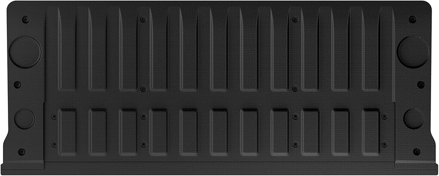
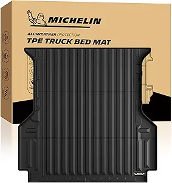
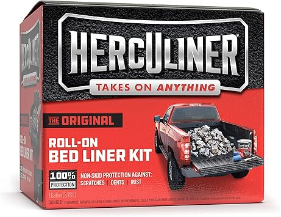

← bedtread.com
Bedtread Reviewed: Our Honest 2026 Picks
May 2026
If you've been researching bedtread lately, you know the market changed a lot in 2026. New options, shifting prices, and plenty of noise to cut through.
Must-Have vs Nice-to-Have
- Verified reviews — Focus on 4+ star products with 50+ verified reviews. Ignore anything with only a handful of ratings.
- Total cost of ownership — The cheapest bedtread upfront can be the most expensive over time with replacements and accessories.
- Value ratio — Mid-range bedtread usually deliver 90% of premium performance at half the cost.
- Build quality — Cheap bedtread fall apart fast. Look for solid construction and quality materials.
Standout Options



Wrapping Up
The best bedtread is the one that fits your needs and budget. Our detailed comparisons on bedtread.com make that call easier.
Affiliate Disclosure: As an Amazon Associate, we earn from qualifying purchases. This doesn't affect our recommendations.